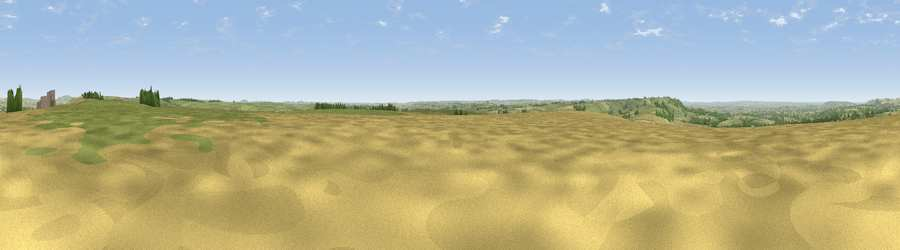

Viewpoint near Market Lavington
#12145 in England · top 16% of its area beats it · near Market LavingtonThe view, rendered

A 360° render of this exact spot computed from the terrain model, tree cover and land cover — summer colours, afternoon light, calibrated against photographs of famous viewpoints. Real trees, hedges and buildings will differ in detail.
The panorama
Grey silhouette: terrain skyline in each direction (720 bearings, Earth curvature and refraction included). Dashed green: skyline with trees (+15 m) and buildings (+8 m) as obstacles. Blue strip: how far the ground is visible on each bearing.
Where the view opens
Wedge length = distance to the farthest visible ground on that bearing (vegetation-aware). Rings at 10, 25 and 50 km.
What fills the view
57% grassland · 33% cropland · 9% woodland · 1% built-up
Angular shares of the visible panorama (visual magnitude), not map area. Landscape diversity 0.41 (0–1 Shannon).
Key numbers
More beautiful places nearby
The staircase of upgrades: each row has a higher view potential than everything closer. Driving times are estimates from straight-line distance, calibrated against real road routing — check an actual route before setting out.
| Place | Direction | Drive | Score |
|---|---|---|---|
| Viewpoint near West Lavington | WSW · 1 km | ~3 min | 62.1 |
| Viewpoint near Urchfont | NNE · 3 km | ~7 min | 66.5 |
| Viewpoint near Edington | W · 10 km | ~19 min | 71.9 |
| Viewpoint near Heddington | N · 11 km | ~21 min | 72.1 |
| Viewpoint near Heddington | N · 12 km | ~22 min | 73.0 |
| Viewpoint near Bratton | W · 12 km | ~23 min | 73.2 |
| Viewpoint near Allington | NNE · 13 km | ~24 min | 75.6 |
| Martinsell viewpoint | NE · 19 km | ~32 min | 77.3 |
51.27592, -1.96877 · source: screening · position refined by local search. Computed location — check access rights before visiting.